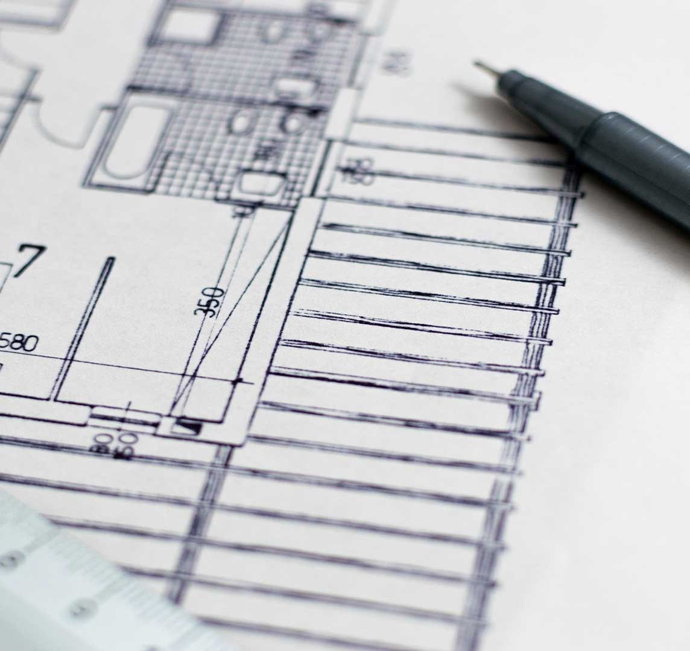

Since I've moved to New York eight years ago, I've really enjoyed spending my time exploring the city. I've learnt a lot about the different neighbourhoods and what each one has to offer. I would walk around for hours around Manhattan and Brooklyn, familiarizing myself with the different areas. After 4 years, I finally felt comfortable navigating around the city without relying on any form of navigation and knew exactly which spots to take my friends and family to.
When I lived in the city and was attending school, I used to go on a lot of field trips with my class and we would sit inside museums, churches and parks, and sketch what we saw for hours at a time. My drawings solely focused on architecture and interiors which taught me a lot about the history of how the city was built.
After living in Manhattan for 4 years, I decided to make the move to Brooklyn which gave me new areas to explore! I've moved from Park Slope then to Williamsburg and I am now in Greenpoint. I really enjoyed spending time in Prospect Park and biking around the neighborhood, especially in the summer. Greenpoint is by far my most favorite area as the neighborhood has a pace to it that aligns with my needs and everything is easily acessible.